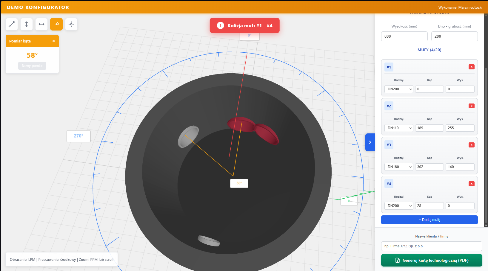
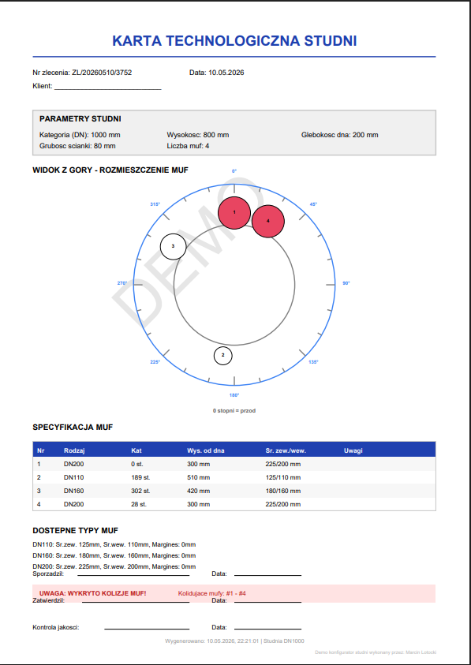
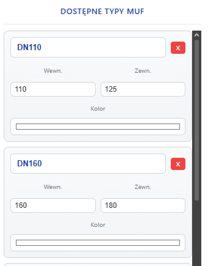
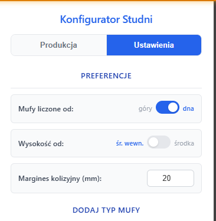

Konfigurator Studni 3D
Interaktywne narzedzie do konfiguracji studni betonowych z wizualizacja 3D, wykrywaniem kolizji i eksportem dokumentacji.

Interaktywne narzedzie do konfiguracji studni betonowych z wizualizacja 3D, wykrywaniem kolizji i eksportem dokumentacji.
Sprawdzenie wykonalnosci konfiguracji w sekundy zamiast minut
Automatyczne wykrywanie kolizji muf przed produkcja
Generowanie karty technologicznej dla produkcji jednym kliknieciem
Kompleksowe narzedzie do projektowania studni betonowych

Interaktywny podglad studni z mozliwoscia obracania, przybliżania i pomiaru odleglosci. Widok z kazdej strony w czasie rzeczywistym.

Automatyczne sprawdzanie czy mufy nie koliduja ze soba. Ostrzezenie pojawia sie natychmiast gdy odleglosc jest zbyt mala.

Eksport kompletnej dokumentacji z widokiem od gory, lista muf, katami i wymiarami. Gotowe do druku dla hali produkcyjnej.

Definiowanie wlasnych typow muf z ustawieniem srednicy wewnetrznej, zewnetrznej i koloru wizualizacji.

Konfiguracja sposobu liczenia wysokosci muf (od dna/gory), globalny margines kolizyjny i tryb debug.
Dzialaj na komputerze, tablecie i telefonie. Panel boczny chowa sie automatycznie na malych ekranach.